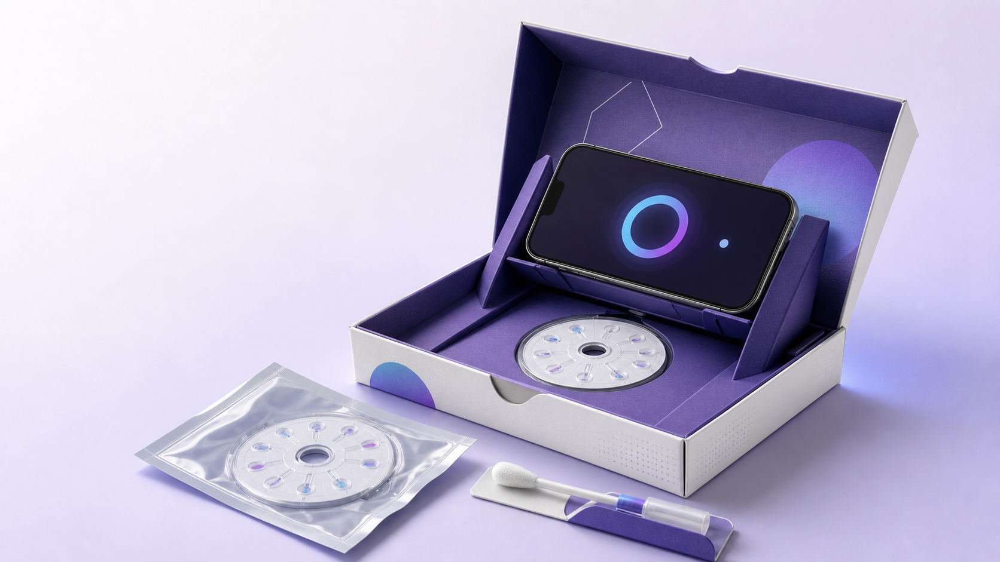
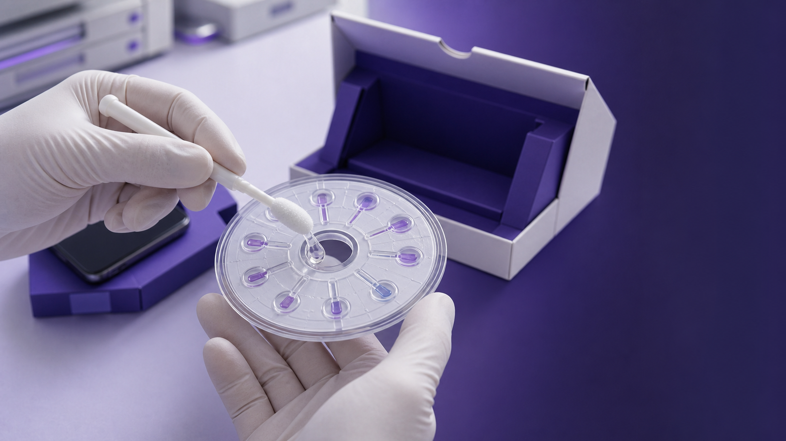
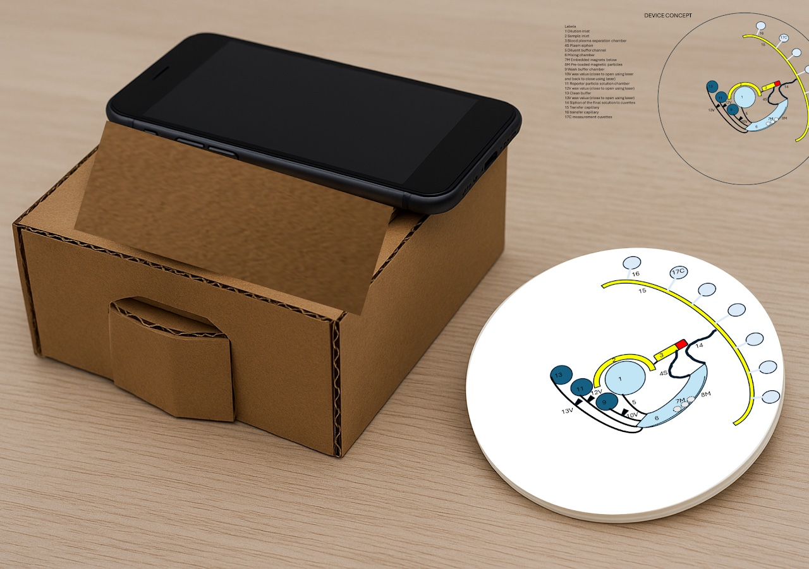
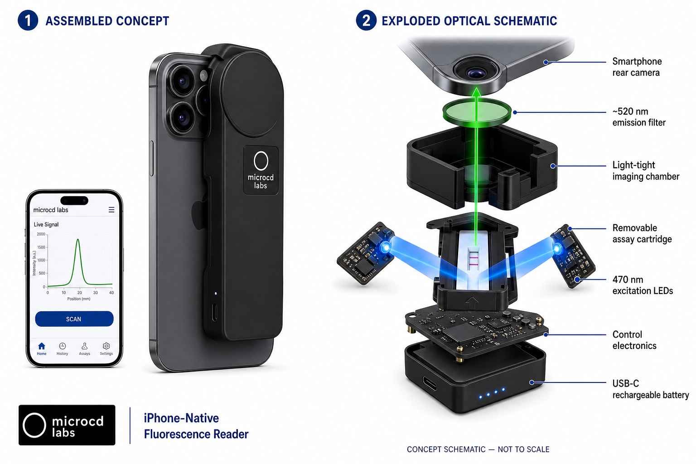
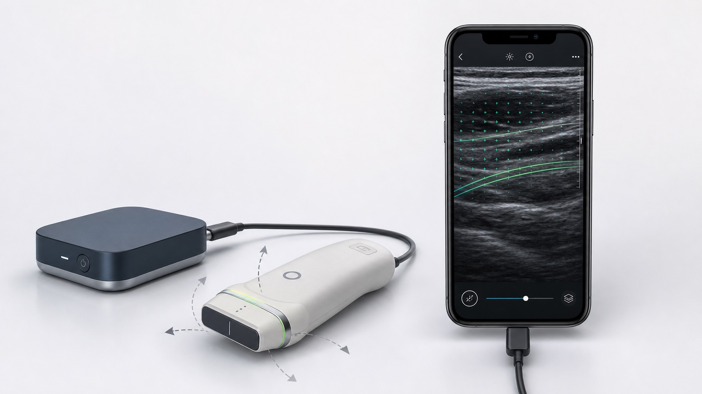

Products
Find microfluidic parts and components faster.
Search by product type, material, MicroCD catalog number, or use case. Every catalog item is made in-house on bespoke 3D printers owned and operated by MicroCD Labs.
Made in-house by MicroCD Labs
Every catalog item is produced on our own bespoke 3D printers, giving MicroCD Labs direct control over each build.
Quote-reviewed products
Choose the item and variant first. MicroCD Labs confirms current availability, final price, lead time, and documentation before payment.
First quote: add code MICROCD10 to your notes for 10% off eligible items.
Flagship platform
In development
CLAIR by MicroCD Labs
A compact lab-on-a-disc workflow built around the phone already in your pocket.
CLAIR is a saliva-first centrifugal microfluidic platform designed to combine sample preparation, controlled fluid handling, and smartphone optical readout in a portable, cartridge-led format.
- 5–10 minTarget time from test start to smartphone result
- 3 stepsCollect saliva, insert the disc, read on a phone
- No benchtop centrifugeCapillary siphon valves and reciprocation handle fluid movement

How CLAIR is designed to work
The disc does the lab work.
Metering, mixing, separation, timing, and optical readout are designed into one controlled workflow to reduce operator-dependent variability.
- 01Collect saliva
An oral swab transfers the sample into the panel-specific disposable disc.
- 02Meter with siphon valves
Capillary forces route and time fluid movement without external pumps.
- 03Mix by reciprocation
Controlled back-and-forth motion supports mixing and reaction inside the disc.
- 04Separate by settling
Controlled sedimentation is designed to provide centrifuge-like sample cleanup.
Development note: Workflow timing, precision, analytical sensitivity, and limits of detection remain subject to panel-specific engineering and validation.
Platform demonstration
Designed for a simple saliva-to-result experience.
The initial development path focuses on veterinary saliva testing, including supervised vet-site and preconfigured mail-in workflows.

Images are concept renderings used to communicate the intended product workflow; final hardware, packaging, and user experience may change.
Patent filing evidence
A U.S. provisional patent application has been received for the core platform.
The USPTO electronic receipt records application 64/126,200, received August 5, 2026, for Portable Centrifugal Diagnostic Platform with Mobile-Device Optical and Kinetic Assay Analysis.
This is evidence of receipt of a provisional application, not an issued patent or a determination of patentability.
- Application
- 64/126,200
- Receipt date
- August 5, 2026
- Type
- U.S. provisional
- Status shown
- Patent pending
Additional catalog families
Browse consumables, OEM components, and service packages.
These direct links remain available even when catalog filtering or JavaScript is unavailable.
Lab plastics and consumables
OEM manufacturing support
Research imaging platforms
Early concepts shaped around practical research workflows
These concepts are under development and are not included in the purchasable catalog.

Platform concept — in development
Centrifugal microfluidics
InvertaDx
An origami-inspired lab-on-disc concept exploring staged sample preparation and assay processing for resource-constrained research settings.
Explore InvertaDx
Concept — in development
Assay imaging
Clip-on fluorescence reader
Exploring compact image acquisition for time-resolved fluorescence and research assay workflows.
View reader concept
Research concept — in development
Directional ultrasound
Clip-On Ultrasound Research Concept
Exploring multi-angle acquisition and motion-aware reconstruction for directional tissue mapping.
Explore the conceptConcepts shown are not finished or validated devices and are not intended for diagnosis, treatment, or clinical decision-making. Availability and performance have not been established.
Classified catalog
Select a product class
MicroCD Labs in-house production: Every item in this catalog is made in-house using bespoke 3D printers owned and operated by MicroCD Labs. Prices are indicative until the exact configuration, dimensions, quantity, documentation, shipping, and lead time are confirmed in writing.
Cart and checkout
Build your order request
Add catalog items, adjust quantities, then send the request with your lab details. MicroCD Labs confirms availability, final price, shipping, and compliance before sending a secure payment link or invoice.
Cart items
No items in cart yet.
Email order request Request Stripe invoicePayments are reviewed first. Card details are handled by Stripe. See Privacy and Terms.